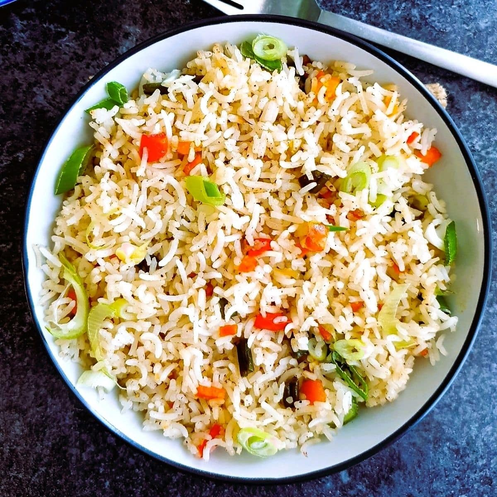

Fried Rice

About this dish
This classic Veg Fried Rice recipe is made with a hearty mix of fresh vegetables, green onions, seasonings and spices for an incredibly flavorful fried rice dish. Hands-down this is one of our favorite Chinese-inspired recipes.
Ingredients Required
- 1 cup Basmati Rice
- 2 tbsp Oil
- 1 tbsp Ginger,Garlic and 2 Green Chilli chopped finelyt
- 1 Onion,1 Carrot and 1 cup Cabbage all chopped finely
- 4 Spring Onion,½ Bell Pepper
- 1 tbsp Soy Sauce,2 tsp Vinegar
- 1 tsp Black Pepper Powder and salt to taste
Steps
- Cook basmati rice and drain it. Cool it completely.
- Heat oil in wok on high heat.
- Turn on the Instant pot in saute mode. Add oil or vegan ghee and once it's hot, add the onion paste. Cook for 30 seconds..
- Add in ginger, garlic, spring onions, green chillies and toss well.
- Add in veggies, and cook for 5 mins on high heat till tender.
- Add in salt, sugar,pepper,soy sauce and vinegar and mix well.
- Add in cooked rice and toss well.
- Now add some extra pepper powder, spring onion greens and mix well.
- Serve hot.
Home Page